Мой первый утренник!
Утром 21-го декабря у Вари был первый в ее жизни утренник. Все дети нарядно одеты. Пришел Дед Мороз, зайчик и какая-то тетенька с микрофоном, все звали ее снегурочка.
Дед Мороз дарил подарки, снегурочка пела, зайчик просто прыгал где-то в сторонке.
Варя не стала тратить время напрасно — первая пробилась с заветному мешку с подарками! Какое же было у нее разочарование, когда она узнала, что Дед Мороз забыл положить конфеты!
В целом праздник удался. Жаль только, что родителей не пустили на Утренник, и пришлось им подглядывать за своими детьми из коридора.
21 декабря 2012 г.
Ноутбук
Не смотрите что я маленькая, я уже умею пользоваться ноутбуком! Могу лежать на диване, держать ноутбук, нажимать на клавиши и делать задумчивый вид, как у папы.
17 декабря 2012 г.
Лангал
В Ханты-Мансийске, есть не большой развлекательный центр. Он примечателен тремя вещами — автоматом для чистки обуви на входе, конфетами за 5 рублей и детской развлекательной площадкой.
Варя с папой ходят туда почти каждые выходные. Сначала мы долго чистим обувь на входе, потом обязательно покупаем конфетки и идем на детскую площадку.
На детской площадке есть горка, батут, много игрушек, доски для рисования, большой лабиринт, карусели и много разных автоматов.
Плохо только что папа тормозит и Варя очень редко попадает в кадр, толи папа медленно поворачивается, толи Варя быстро бегает!
9 декабря 2012 г.
Снеговик
Снова пришла зима! Мягкий, пушистый и очень липкий снег у бабушки в деревне.
Вместе с братом Тимофеем, Варвара решила лепить снеговик. Ну а, чтобы при этом сильно не устать, взяла с собой маму и папу. Папе разрешено было фотографировать, как идет процесс, маме была поставлена задача лепить снеговика, под чутким руководством своей дочери.
После 20 минут работы, снеговик было готов. Варя с Тимофеем были очень рады. Однако, вскоре они замерзли и устали. Пришлось сначала забрать у снеговика нос и съесть его, потом выдергать ему все волосы и сломать руки.
От досады, что есть и ломать больше в снеговике нечего, ребята всего за несколько ударов разворотили несчастную скульптуру и довольные пошли на веранду отдыхать.
2 ноября 2012 г.
8 Марта!
Утром Варе подарили первый в ее жизни букет цветов. Получать в подарок цветы оказалось на удивление приятно. Позавтракав Варя собралась погулять, все таки такой праздник необычный, наверняка мама с папой устроят ей какой-нибудь сюрприз.
Первым делом она решила, что не плохо бы скушать что-нибудь сладкое, о чем тут же заявила громко миру, пришлось задобрить ребенка пироженным. Ну а когда сам сыт, то можно и окружающих покормить, тем более кормить птиц это очень увлекательно и интересно. Жалко только что семечки быстро кончаются, наверняка птичкам это показалось мало.
На центральной площади построили красивые ледяные фигуры, вокруг которых гуляют родители с детьми. Варе ледяные фигуры понравились, ведь они такие большие и так интересно сверкают на солнце.
Вечером в завершении дня обязательно надо посмотреть пару мультиков, а если еще в компании с подружкой, то вообще замечательно!
8 марта 2012 г.
Готовимся к 8-му Марта.
Проснулась Варя 7-го Марта в хорошем расположении духа и после утренних процедур сразу приступила за уборку. Прибрала мамины кастрюли по всей кухне, а потом, взяв скалку, решила тщательно раскатать пол. Увидев фотоаппарат, Варюшка обрадовалась и разошлась не на шутку, уж очень любит она позировать.
После активного время провождения дома, Варя решила вынести мусор. Вытащив пакет с мусором в коридор и аккуратно его распределив по линолеуму, Варя с чувством выполненного долга села отдохнуть. Как скучно сидеть на одном месте, поэтому Варя решила не останавливаться на достигнутом и потребовала вывести ее на улицу, прихватив в последний момент вместо пакета с мусором мамины сапоги в похожем пакете.
На улице много машин, снег и люди заняли все ее внимание. Марафон вокруг дома с маминым сапогами в пакете (А кто бы посмел его у нее забрать?) продолжался примерно полчаса. Устав и набегавшись в волю, Варя захотела поиграть в мяч, тем более он как раз был неподалеку у мальчишек, которые в это время играли им в хоккей.
Так незаметно пролетел целый час на свежем воздухе. Пустой желудок напомнил о себе глухим урчанием. Тут же побросав все, Варя побежала домой, там как раз мама котлеты должна была доделать.
7 марта 2012 г.
 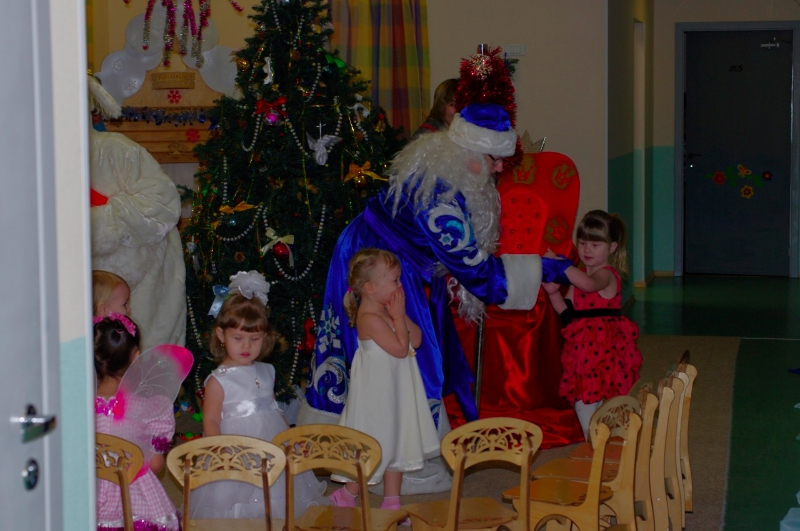
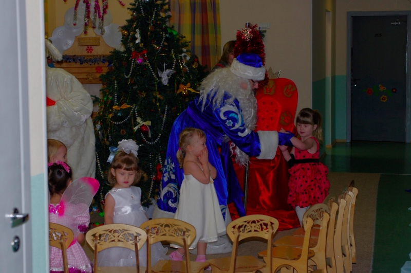
 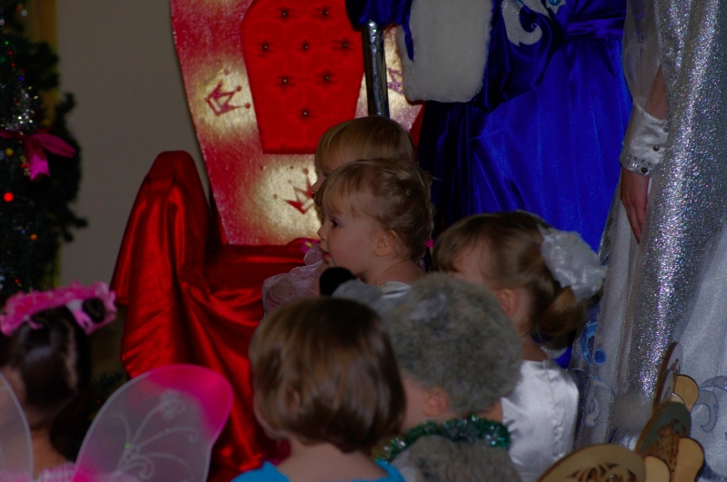
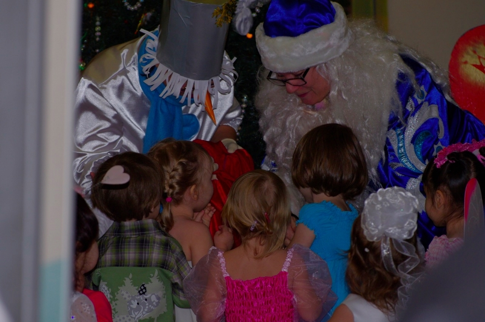
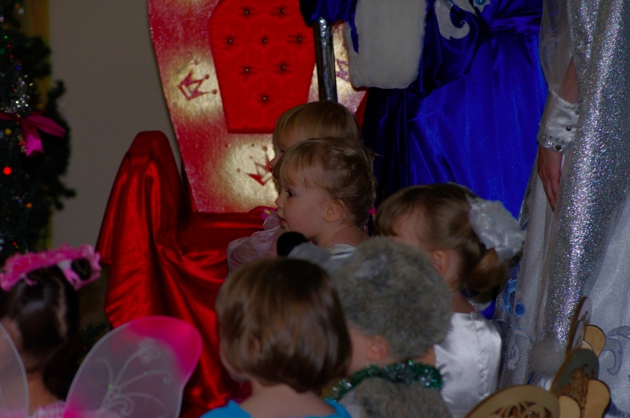
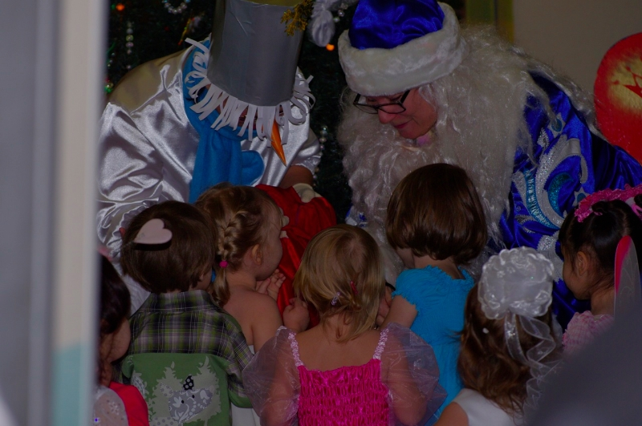


 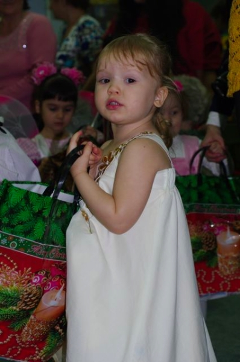
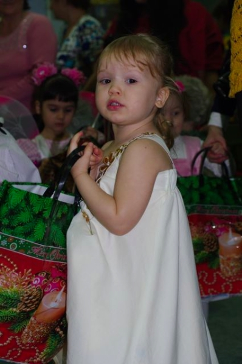
 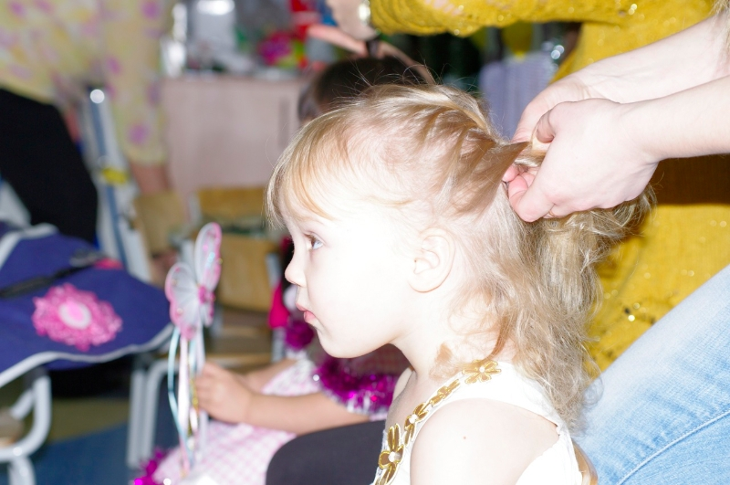
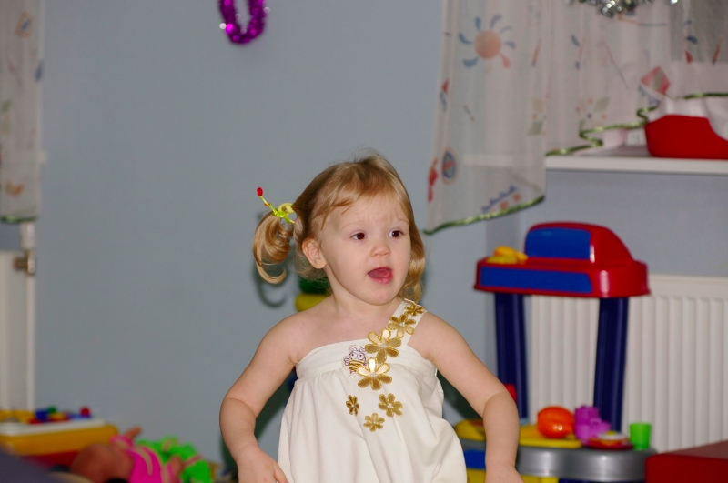
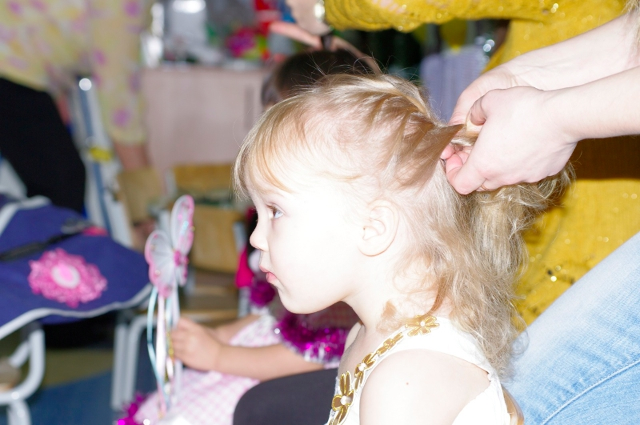
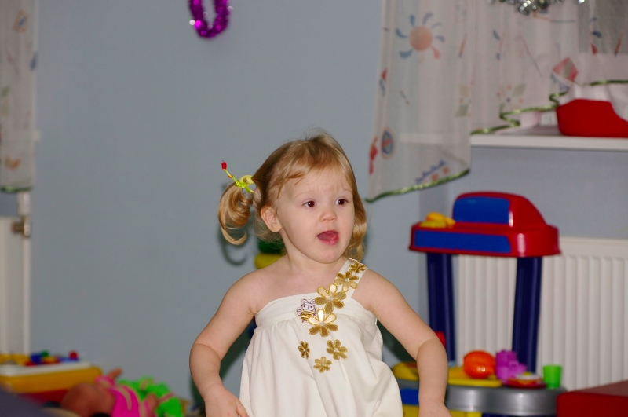